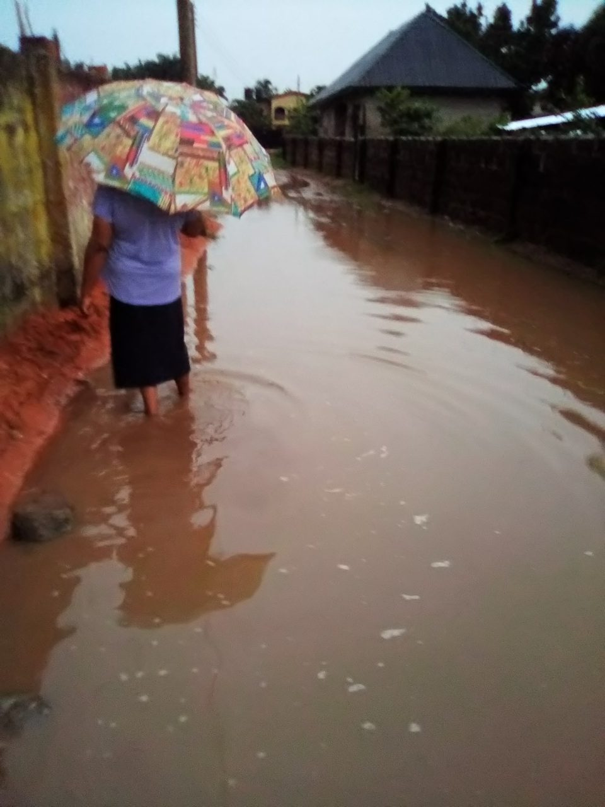
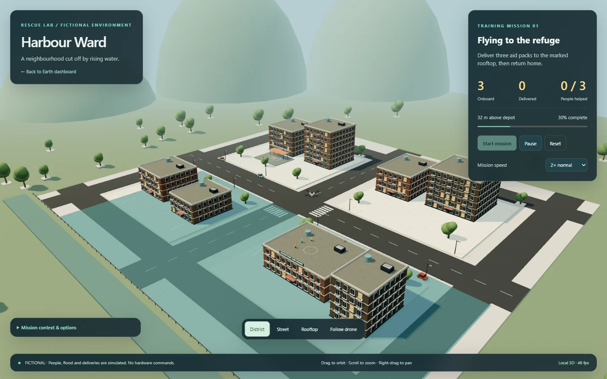

Fly the rescue. Nothing real moves.
A flood-rescue drone simulation, an image classifier and a live operations map.

A flood-rescue drone simulation, an image classifier and a live operations map.

| 1 | Disaster image classifier | Zero-shot CLIP over six labels. | py image_upload_demo.py |
|---|---|---|---|
| 2 | 3D rescue simulation | Flooded buildings, rooftop people, package inventory. | ./run_rescue_simulation.ps1 |
| 3 | Live operations map | Real geography, weather and active disaster records. | ./run_live_operations.ps1 |
| 4 | Operator-controlled rescue | A globe, missions you fly or abort, an evidence log. | ./run_earth_rescue.ps1 |
| 5 | QGroundControl telemetry | The simulated mission over UDP MAVLink. | ./run_all_demo.ps1 |

fictional_rescue.html, served locally. No map token, no hardware.Give it a photograph. CLIP scores it against these.
Every person, package and delivery is simulated.
Nothing here controls a real drone, motor or flight controller.
git clone https://github.com/boss477/drone-disaster-rescue-simulation
cd drone-disaster-rescue-simulation
./setup.ps1
./run_rescue_simulation.ps1-Mavlink to the setup for the QGroundControl bridge.